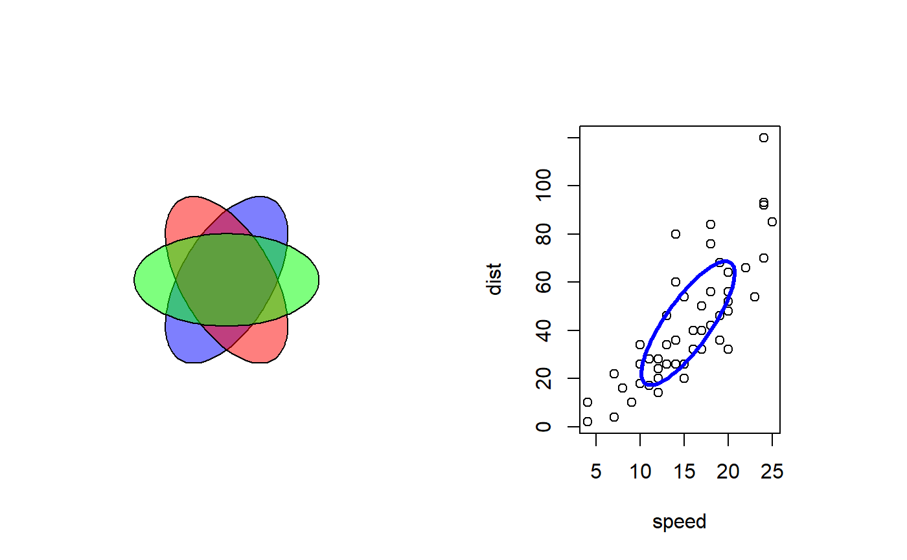

DrawEllipse.RdDraw one or several ellipses on an existing plot.
DrawEllipse(x = 0, y = x, radius.x = 1, radius.y = 0.5, rot = 0, nv = 100, border = par("fg"), col = par("bg"), lty = par("lty"), lwd = par("lwd"), plot = TRUE)
| x, y | the x and y co-ordinates for the centre(s) of the ellipse(s). |
|---|---|
| radius.x | a scalar or a vector giving the semi-major axis of the ellipse. |
| radius.y | a scalar or a vector giving the semi-minor axis of the ellipse. |
| rot | angle of rotation in radians. |
| nv | number of vertices to draw the ellipses. |
| border | color for borders. The default is |
| col | color(s) to fill or shade the annulus sector with. The default |
| lty | line type for borders and shading; defaults to |
| lwd | line width for borders and shading. |
| plot | logical. If |
Use DegToRad if you want to define rotation angle in degrees.
The function invisibly returns a list of the calculated coordinates for all shapes.
par(mfrow=c(1,2)) Canvas() DrawEllipse(rot = c(1:3) * pi/3, col=SetAlpha(c("blue","red","green"), 0.5) ) plot(cars)m <- var(cars) eig <- eigen(m) eig.val <- sqrt(eig$values) eig.vec <- eig$vectors DrawEllipse(x=mean(cars$speed), y=mean(cars$dist), radius.x=eig.val[1] , radius.y=eig.val[2] , rot=acos(eig.vec[1,1]), border="blue", lwd=3)